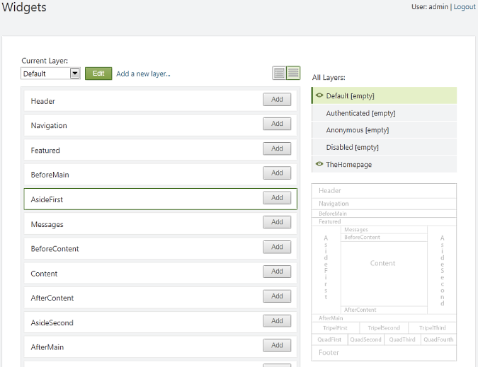
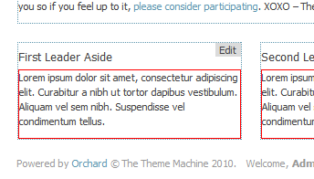

Themes enable Orchard users to customize the rendering of the site and tailor it to their needs and design goals. Themes can perform targeted overrides of style sheets, images, layouts, or of any content template provided by any Orchard module.
Where Themes Live
A theme is set of appropriately named files inside of a folder. That folder must be under the Themes folder under your Orchard website's root folder.
TheThemeMachine
The theme named TheThemeMachine is the theme that comes built into Orchard. You can examine this theme in order to learn about Orchard themes. Like any theme, it can be found under the Themes folder.

The TheThemeMachine theme has been designed to be a clean-looking, modern theme and to be a good starting point for customization and for the development of new themes. This article uses this theme as an illustration.
Anatomy of a Theme
This section describes required and optional elements of a theme.
Manifest
To be valid, a theme must have a manifest that describes it to the system. The manifest is a text file named Theme.txt that is found in the root folder of the theme it describes. Here is the manifest for the TheThemeMachine theme:
Name: The Theme Machine
Author: jowall, mibach, loudej, heskew
Description: Orchard Theme Machine is a flexible multi-zone theme that provides a solid foundation to build your site. It features 20 collapsible widget zones and is flexible enough to cover a wide range of layouts.
Version: 1.8.1
Tags: Awesome
Website: http://orchardproject.net
Zones: Header, Navigation, Featured, BeforeMain, AsideFirst, Messages, BeforeContent, Content, AfterContent, AsideSecond, AfterMain, TripelFirst, TripelSecond, TripelThird, FooterQuadFirst, FooterQuadSecond, FooterQuadThird, FooterQuadFourth, Footer
The beginning of the file gives the theme a friendly name, description, author, description, and tags. The Zones field provides a list of all the zone names that are going to be available for widgets throughout the theme's layouts and templates. Zones are containers that can be added to any template or layout. Various UI elements can be injected into zones, but the most common ones are widgets. Not all zones need to be exposed in the manifest, only those that are intended to host widgets.

This illustration shows 19 zones, which is typically more than you need for a site. The zones include a header and footer, which are zones situated on the top and bottom of the page. There is a navigation zone, which is typically where navigation menus would be inserted. The Featured zone is where you might put a site banner. BeforeMain and AfterMain surround the main zones on the top and bottom. AsideFirst and AsideSecond are sidebars that are rendered on the left and right of the main content. In the center of the page there is a Messages zone where notifications go, followed by BeforeContent, the content itself, the Content zone and the AfterContent zone. On the bottom of the page, there are TripelFirst, TripelSecond, and TripelThird that you can use if you want three columns on the bottom, and the FooterQuad* zones that you can use if you want four columns.
All zones in TheThemeMachine theme are collapsible, which means that they will only be rendered if there is content in them.
Icon or Thumbnail
A Theme.png file should be included with all Orchard themes. This image should be at least 400x400 pixels and is meant to represent the theme in the gallery or in the theme administration page. It usually is a thumbnail image of a page of a site rendered using that theme.
Widget Zones Preview Image
Optionally, a preview image for the widget zones can be added to the theme. The image should be placed at the root of the theme and be called ThemeZonePreview.png. This image should be 400 pixels wide and should show the different zones and their names. An example can be found in TheThemeMachine.

Static Resources
A theme typically contains a number of static resources, such as CSS style sheets, JavaScript files, or images. Those files must be in the following folders:
- CSS style sheets should be in the \Styles folder of the theme.
- JavaScript files should be in the \Scripts folder of the theme. Any scripts you put in this folder should be custom scripts that are only related to your theme, not scripts that are intended to be reused. Such reusable scripts should be included in a separate module. See the jQuery module for an example.
- Images should be in \Content\Images folders. If your theme contains few images, it's fine to keep them all at the same level. However, if you have many images, it is recommended that you organize them in subfolders.
Note To enable files to be served, each of the folders that contains static files such as style sheets, images, or JavaScript code should contain a web.config file that contains the following content:
<?xml version="1.0" encoding="UTF-8"?>
<configuration>
<system.webServer>
<staticContent>
<clientCache cacheControlMode="UseMaxAge" cacheControlMaxAge="7.00:00:00" />
</staticContent>
<handlers accessPolicy="Script,Read">
<!--
iis7 - for any request to a file exists on disk, return it via native http module.
accessPolicy 'Script' is to allow for a managed 404 page.
-->
<add name="StaticFile" path="*" verb="*" modules="StaticFileModule" preCondition="integratedMode" resourceType="File" requireAccess="Read" />
</handlers>
</system.webServer>
</configuration>
Document
The Document.cshtml file is usually not found in themes because there is seldom any reason to overwrite it. Most themes can just fall back to the version of the file that can be found in the SafeMode theme, under \Views. The Document.cshtml file is responsible for the HTML that goes around the body element. This means it defines the doctype element (Orchard assumes the HTML5 document type), the html element, the head element (where it defines the head zone where the meta tags), some script elements, and the links for style sheets to be inserted. (This is different from the Header zone, which is the top zone in the body.) The Document.cshtml file also contains the title element inside the head element. Finally, the file defines the body element where the Body and Tail zones are rendered.
Layouts
Layouts are the outermost shape that is rendered within the body element. For example, this is typically where you define the main widget zones. You can read about the details of the markup inside of a layout in the Markup section later in this document.
A theme can contain any number of layout files, even though currently only one is supported and included in the TheThemeMachine theme, namely Layout.cshtml. For example, a theme can add specialized layouts, such as Layout-Blog.cshtml or Layout-HomePage.cshtml, that would be used instead of the default for a blog or for the homepage, provided there is an extension providing those layout shape alternates. Notice that layouts are named Layout-{layout name}.cshtml. Each layout can have a different set of zones, organized differently in markup.
For an example of how your own modules and themes can provide alternative layouts based on custom criteria, see Switching the Layout in Orchard CMS.
Shape Templates
In Orchard, before a web page is rendered into HTML, it is built as a tree of shapes. Shapes are flexible objects that represent the objects that will contribute to the rendering of the page. Examples include zones, menus, menu items, and widgets.
Each shape can be rendered by a template, which can be overridden by a theme. Templates have the same name as the shape they are made to render. For example, if Menu.cshtml exists, it is used to render a Menu shape.
The TheThemeMachine theme has two shape templates, BadgeOfHonor and Branding, which are built from Layout.cshtml and injected into the Header and Footer zones using the following code:
// Site name and link to the home page
WorkContext.Layout.Header.Add(New.Branding(), "5");
// Powered by Orchard
WorkContext.Layout.Footer.Add(New.BadgeOfHonor(), "5");
Note Templates are one of two ways to render shapes. In addition to templates, you can define the rendering using code, by defining a method that has a
Shapeattribute. Look for the CoreShapes.cs file for examples. This is usually done in modules, but themes can do it as well.
Item Templates
Themes can override how content items are rendered by including a template in their \Views\Items folder. The name of the template should be Content-{content type name}.cshtml or Content-{content type name}.{display type}.cshtml. For example, a template that overrides how blog posts are rendered should be \Views\Items\Content-BlogPost.cshtml, and a template that overrides the summary rendering of a blog post should be \Views\Items\Content-BlogPost.Summary.cshtml.
Part Templates
Themes can override the rendering of content parts. The convention is similar to the convention for content item templates. The template for a part must be in \Views\Parts and must be named for the shape for the part. For example, the rendering for comments can be overridden by creating the file \Views\Parts\Comments.cshtml.
Field Templates
Field rendering can be overridden as well, although not yet at the field instance level. In other words, you can override what a text field looks like but not what a specific text field looks like. To override a field template, create a {field type name}.cshtml or {field type name}.{display type}.cshtml file in \Views\Fields. For example, the rendering of text fields can be overridden by a \Views\Fields\Common.Text.cshtml template.
Alternates
Alternates are a set of related shapes with corresponding templates or layout files that enable you to control how different types of content are rendered within a theme. For example, you can use alternates to apply one layout file for the home page but another layout file for subpages, or you can use alternates to render elements one way when the elements are in a page but a different way when they are in a blog post.
For more information, see Alternates.
Widget Overrides
The rendering for widgets can also be overridden by creating a template in \Views named widget-{widget type}. For example, you can override the rendering of the HTML widget and add a red frame around the content by putting the following widget-htmlwidget.cshtml file into the \Views folder of your theme:
<div style="border:1px red solid">
@Display(Model.Content)
</div>

Note that this is just a simple example, and normally adding a frame would be better done using CSS.
Placement Files
A theme can modify where shapes are rendered by including a placement.info file at the root of the theme folder. The placement.info file is an XML file. Here is an example:
<Placement>
<!-- widgets -->
<Place Parts_Blogs_BlogArchives="Content:before"/>
<Place Parts_Blogs_RecentBlogPosts="Content:after"/>
<!-- default positioning -->
<Match ContentType="Blog">
<Match DisplayType="Summary">
<Place Parts_Blogs_Blog_Description="Content:before"
Parts_Blogs_Blog_BlogPostCount="Meta:3"/>
</Match>
</Match>
</Placement>
Markup
The markup in each file is constrained by the view engine that you choose. The default in Orchard is Razor (.cshtml files), for which a quick guide can be found in Template File Syntax Guide.
Within a template, the Model object represents the current shape being rendered. That means that if you are working with the message shape, which has a Message property, you can display that by writing @Model.Message from within the template markup.
An important addition that Orchard provides is the Display method, which renders a shape. For example, if you look at the layout.cshtml file, you can see how the zones are rendered, using calls such as @Display(Model.Content).
Finally, you can also see in various templates calls such as @Html.RegisterScript("mystyle.css") or @Html.RegisterScript("myscript.js"). These registration calls are necessary because the collections of scripts and stylesheets are a shared resource. The same link or script element should not be rendered twice even if multiple modules or multiple instances of the same widget require the same file.
Themes with Code
Most themes will consist only of a stylesheet, a few templates (usually layouts), and a few images. They will contain no code except for the simple code in the template files. For more advanced themes, you might want to provide settings, create custom shapes, or override shapes in code.
To address these scenarios, it is possible to build a theme much like a module and include a .csproj file that describes how to compile the code it contains. For information about module development, see Walkthrough: Writing An Orchard Module and Creating a Module with a Simple Text Editor.